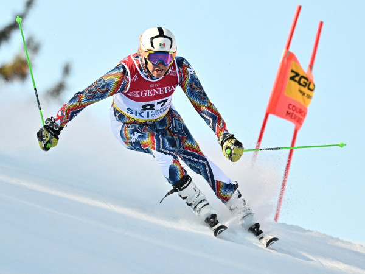
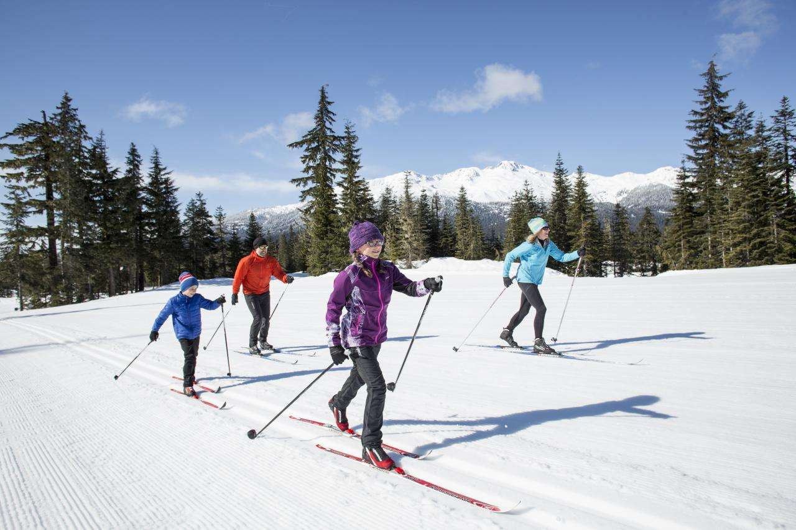
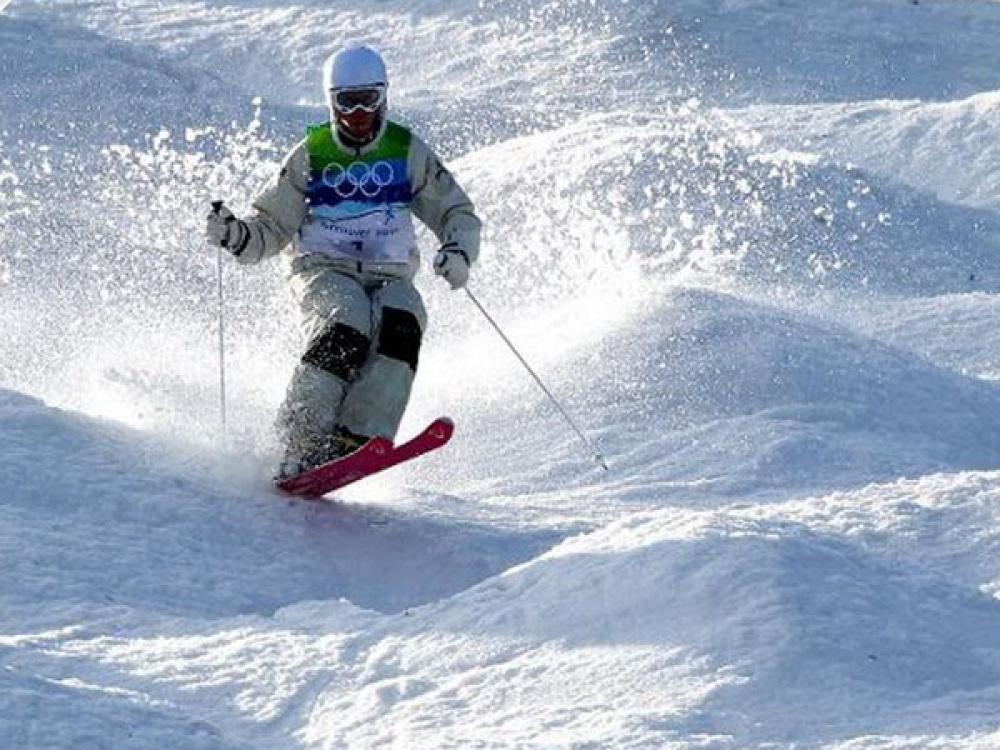
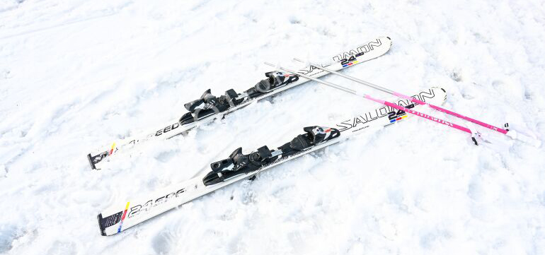
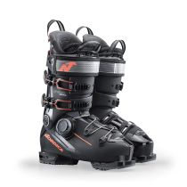
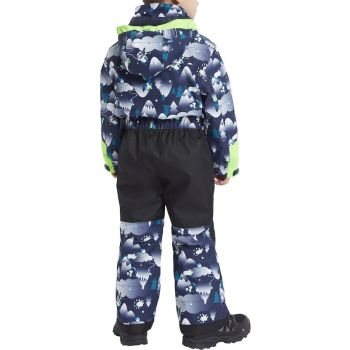
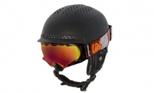

Skijanje je popularan zimski sport i rekreativna aktivnost koja podrazumeva kretanje po snežnim površinama uz pomoć skija pričvršćenih za obuću. Njegovo poreklo seže hiljadama godina unazad, kada su ljudi koristili skije kao sredstvo za kretanje po snegu i lov. Danas je skijanje prvenstveno sport i oblik rekreacije, uživajući veliku popularnost širom sveta. Skijanje zahteva razvijenu tehniku, dobru fizičku spremnost i kontrolu, a istovremeno omogućava uživanje u prirodnim lepotama snežnih pejzaža. Takmičarsko skijanje uključuje lokalne, nacionalne i međunarodne događaje, s vrhuncem na Zimskim olimpijskim igrama. Osim što pruža adrenalinsku zabavu, skijanje doprinosi unapređenju zdravlja, razvija koordinaciju i jača mišiće.
koje uključuje spust i slalom na strmim padinama.
poput skijaškog trčanja i skijaških skokova, koje se više oslanja na ravnotežu i izdržljivost.
koje obuhvataju izvođenje trikova i vožnju po neuređenim terenima.
Ski shop je specijalizovana prodavnica koja nudi širok asortiman opreme i dodataka za skijanje i druge zimske sportove. Pored prodaje, nudimo i dodatne usluge, kao što su iznajmljivanje opreme, servisiranje i popravka skija, kao i profesionalni saveti za izbor opreme prilagođene potrebama kupaca. Naš cilj je da pružimo sve što je potrebno za uživanje u zimskim sportovima, bilo da ste početnik ili iskusni skijaš. Ski shopovi se baziraju na kvalitetu, pouzdanosti i opremi koja omogućava sigurnost i maksimalan užitak na stazi.
za različite discipline, poput alpskog, nordijskog i freeride skijanja.
koje pružaju stabilnost, udobnost i optimalan prenos energije na skije.
uključujući ski jakne, pantalone, termalne slojeve i rukavice, dizajnirane da štite od hladnoće i vlage.
za zaštitu i bolju vidljivost u snežnim uslovima.
